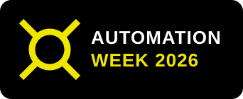
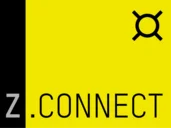
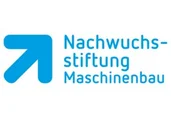
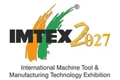
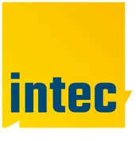

okt12pondelok
ZOLLER Automation Week
Päť dní automatizácie naživo v ZOLLER Inc. Pacific: »coraLogistic«, »coraVarion« a »loadBox« v živých ukážkach, prednáškach a individuálnych konzultáciách s odborníkmi.

Miesta stretávania sa odborníkov z odvetvia
Navštívte naše podujatia na mieste alebo prostredníctvom živého prenosu. Tu nájdete všetky témy a termíny.
V tejto krajine momentálne nie sú naplánované žiadne podujatia.
Päť dní automatizácie naživo v ZOLLER Inc. Pacific: »coraLogistic«, »coraVarion« a »loadBox« v živých ukážkach, prednáškach a individuálnych konzultáciách s odborníkmi.

Navštívte ZOLLER na veľtrhu SIANE Industries a spoznajte naše riešenia naživo v Toulouse.
Riešenia ZOLLER na medzinárodnom veľtrhu obrábacích strojov v Miláne – navštívte nás!
Váš osobný technologický zážitok 1:1 v severoamerickom sídle spoločnosti ZOLLER: živé ukážky »micBox«, »roboBox«, »coraMeasure LG«, »coraVarion« a ďalších prepojených riešení – prispôsobené vašim aplikáciám a výrobným cieľom.
Spoznajte riešenia ZOLLER na dni otvorených dverí spoločnosti BIMATEC SORALUCE v Limburgu.
Ready for 4.0: workshop správy nástrojov pre inteligentnú výrobu. Spoznajte naživo praktické riešenia pre efektívnu organizáciu nástrojov v dnešnej prepojenej výrobe (v nemčine).

Ready for 4.0: workshop správy nástrojov pre inteligentnú výrobu. Spoznajte naživo praktické riešenia pre efektívnu organizáciu nástrojov v dnešnej prepojenej výrobe (v nemčine).

Spoznajte riešenia ZOLLER na veľtrhu METALEX v Bangkoku – poprednej výstave obrábacích strojov a spracovania kovov v celom regióne ASEAN.
Ready for 4.0: workshop správy nástrojov pre inteligentnú výrobu. Spoznajte naživo praktické riešenia pre efektívnu organizáciu nástrojov v dnešnej prepojenej výrobe (v nemčine).
Školenie pre učiteľov o digitálnych systémoch správy nástrojov (v nemčine).

Navštívte ZOLLER na veľtrhu IMTEX 2027 v Bengalúre a spoznajte naše riešenia naživo.

Navštívte ZOLLER na veľtrhu Intec v Lipsku a presvedčte sa o našich riešeniach pre vyššiu efektivitu.

Navštívte ZOLLER na veľtrhu Global Industrie v Lyone a spoznajte naše riešenia naživo.
Navštívte ZOLLER na DST Dreh- und Spantage Südwest vo Villingen-Schwenningene a spoznajte naše riešenia pre vyššiu efektivitu naživo.
GrindingHub Americas prináša budúcnosť brúsenia a dokončovacích technológií do Cincinnati – so živými ukážkami od presného brúsenia cez meraciu techniku až po automatizáciu.
Navštívte nás na veľtrhu GIFA v Düsseldorfe a spoznajte naše riešenia naživo.
Veľtrh určený výhradne spracovateľom kameňa – s nástrojmi, technológiami a partnermi, na ktorých sa každý deň spoliehajú.